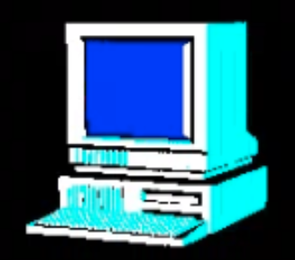

mark umina
embedded software engineer
nyc | boston
mark.umina áț gmail Ð0ț com
linkedin
github
platforms:
- bare-metal
- freertos
- embedded linux
parts last used:
- pic10-32
- attiny
- esp32
- imx6
- nvidia tx1
- tms320
- msp430
- stm32
peripherals:
- sensors and actuators
- smart home radios
- flash/eeprom
- cell modem
- adc
- pwm
- charge controllers
- serial communication controllers
- emif for ram/flash/fpga/cpld interface
protocols:
- spi/i2c/uart
- ble (bluedroid/nordic/bluez)
- http
- mqtt
- zigbee
- zwave
- modbus
- proprietary framing
modules:
- drivers
- bootloader
- application
- local and ota upgrade
- system/program monitor
- system provisioners
electronics:
- digital circuit design/debug
- cpu/controller/soc selection & connectivity
languages:
- c/c++
- bash
- various asm
- some python